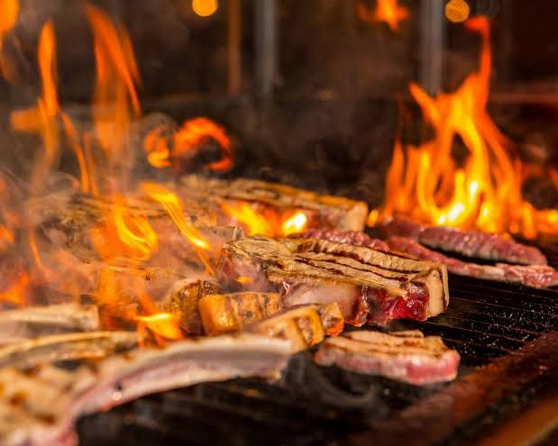
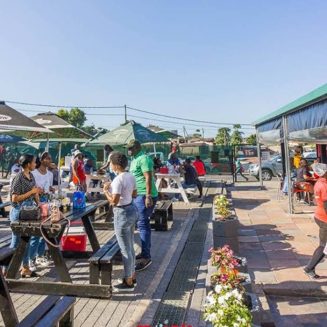
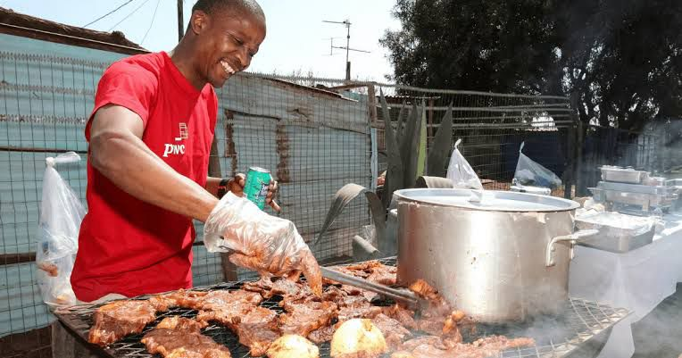
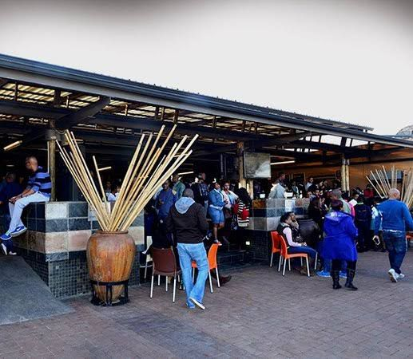
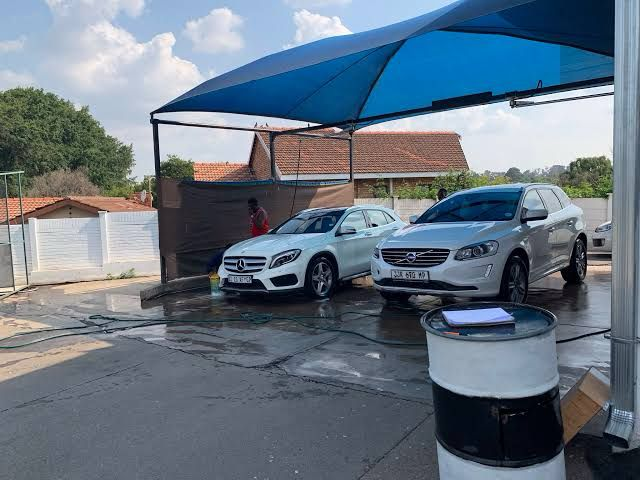

Our Story
Founded in 2020, SBU Shisanyama & Carwash began as a simple idea to combine two essential services that South Africans love - great food and clean cars. What started as a small roadside operation has grown into a beloved community hub.
Our founder, Sibusiso "SBU" Mthembu, noticed that customers often wanted to enjoy a braai while waiting for their cars to be washed. This observation led to the unique combination that makes us special today.
Our Mission
We exist to:
- Provide authentic South African braai experiences
- Deliver professional, eco-friendly car care
- Create a welcoming space for community gatherings
- Support local suppliers and businesses
What Makes Us Different
Unlike traditional shisanyamas or carwashes, we offer:
- The SBU Experience - Where food and car care meet
- Time-Saving Convenience - Enjoy a meal while we clean your car
- Quality Guarantee - We use only the best meats and cleaning products
- Community Focus - Weekly events supporting local talent
Our Team
Behind every great service is a dedicated team. Our staff includes:
- Experienced braai masters with 10+ years combined experience
- Professional car detailers trained in eco-friendly methods
- Friendly service staff committed to your satisfaction
We invest in continuous training to ensure we always deliver the best.
Giving Back
We believe in supporting our community through:
- Monthly charity braai days
- Apprenticeship programs for local youth
- Sponsoring neighborhood clean-up initiatives
- Sourcing 90% of our ingredients and supplies locally